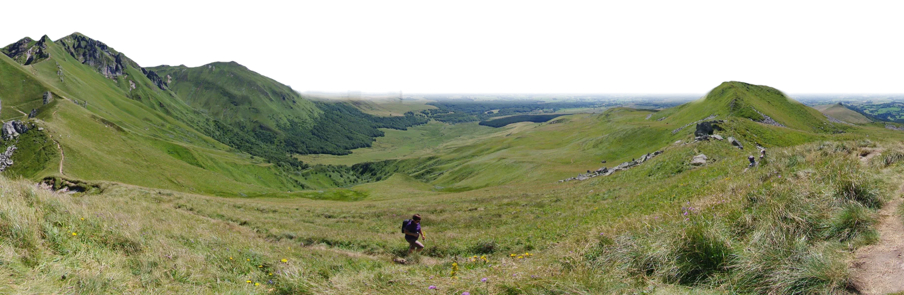
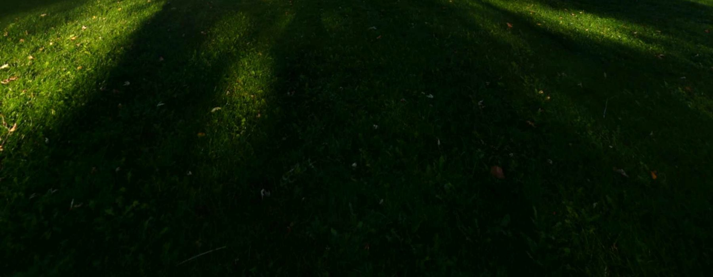
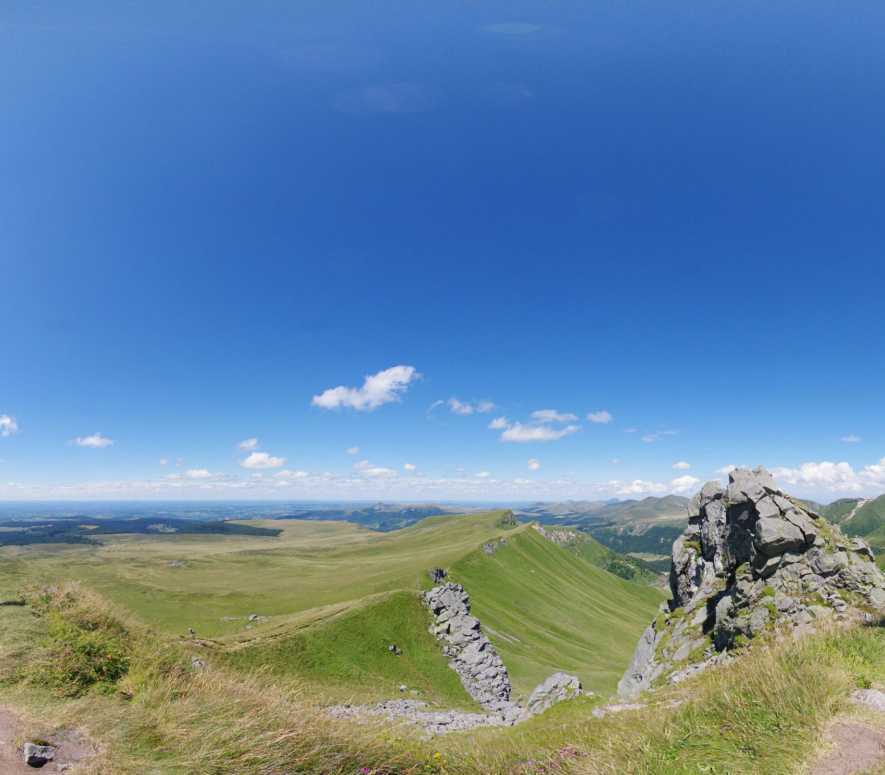
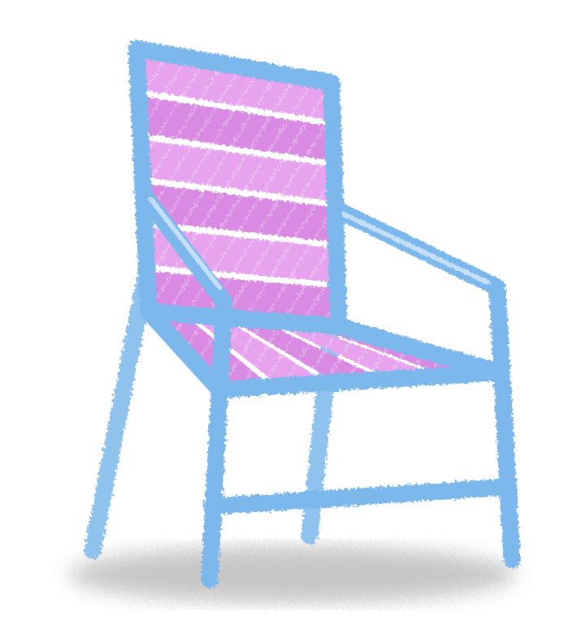
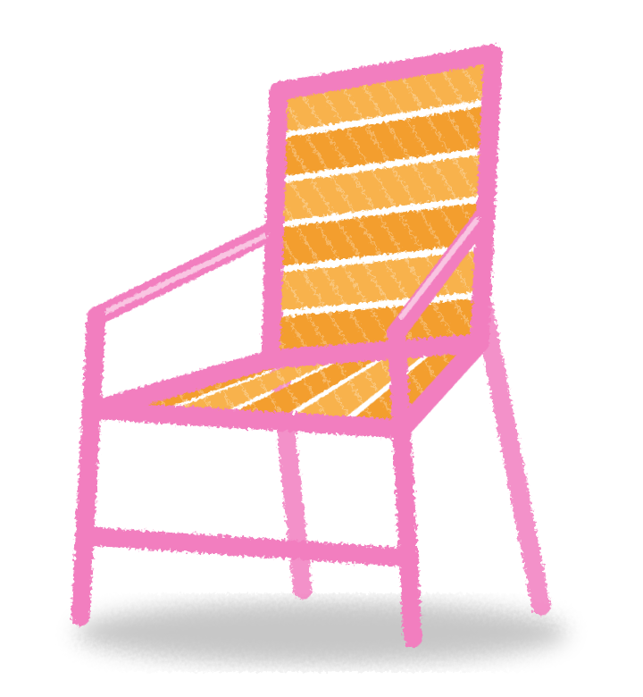

I turn ideas into
working AI
AI / ML engineer building explainable systems. M.Tech in AI Systems at NUS-ISS, currently deep in multimodal vision-language models.

I'm doing my M.Tech in AI Systems at NUS-ISS in Singapore, and I like models that can explain themselves: why a wafer failed, what a camera is looking at, why an alert went off. Before this I shipped features to a live product as a full-stack intern, so I care about the unglamorous parts too.
published · first author
A head-to-head of three architectures for visual speech recognition: turning silent mouth movement into words.
IEEE DLCV 2025
I care about models you can question. Explainable AI and vision-language models are where I spend most of my reading time.

still growing

[ i make things for joy too ]


Open to AI / ML engineering internships and roles. Pull up a chair.